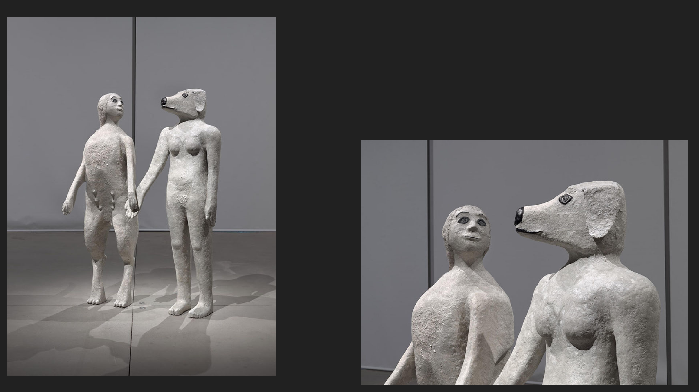
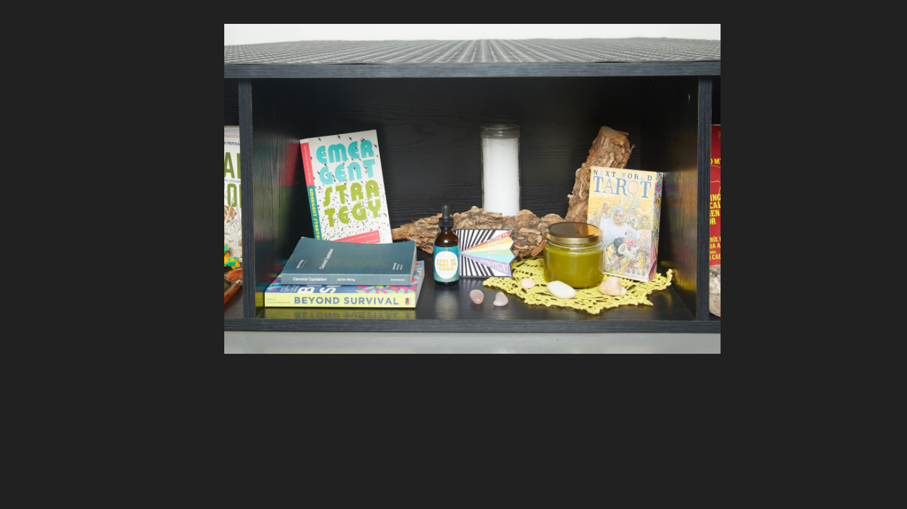
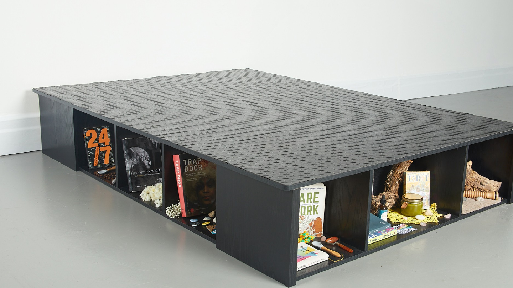

Entangled Bodies: Disability, New
Materialism and the Nonhuman
david duhamel, 11.06.25

★ What is new materialism?
★ What does it imply for disability studies?
★ The nonhuman and the turn to animacy
★ Key thinkers:
○ Karen Barad, Meeting the Universe Halfway
○ Jane Bennett, Vibrant Matter
○ Mel Chen, Animacies
○ Julia Watts Belser, queer alternative animacies
○ Mia Mingus on access intimacy
○ Sunaura Taylor on the intersection of critical disability and animal
studies

Gossiaux, True Love Will Find You in the End,
2021

Dolores Salerno, At Work (Grounding Tactics), 2020
